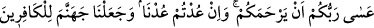
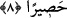

8. Belki Rabbiniz size merhamet eder; fakat siz eğer yine (fesadcılığa)
dönerseniz, biz de sizi yine cezalandırırız. Biz cehennemi kâfirler için bir hapishane
yaptık.
Ey İsrâiloğulları, bundan sonra “Belki Rabbiniz size merhamet eder;” tekrar sizi
nimetlendirir. Yâni ikinci defadan sonra başka bir tevbe daha ederseniz ve günahlardan
kaçınırsanız demektir. Onlar tevbe ettiler ve Allah onlara merhamet etti. “fakat siz eğer
yine” üçüncü defa günahlara “dönerseniz.”
Müftî Sa‘dî der ki: el-Keşşâf’ta da zikredildiği üzere burada evlâ olan ikinci defa
günahlara dönmeleridir. Çünkü onlar iki defa dönmüşlerdir. Birincisi dönüş değil
başlangıç idi. Ancak bunların ilki, onların Kıptîlerin esâreti altında kalmaları olduğu
söylenirse o başka.
“Biz de sizi yine cezalandırırız.” Biz de sizi cezalandırmaya döneriz. Onlar
bozgunculuğa tekrar döndüler. Allah da onlara kisrâları musallat kılmak sûretiyle
azâbını tekrar gönderdi. Kisrâlar onlara haraç ve benzeri şeyleri koyarak zulmettiler. Ya
da onlar Muhammed (a.s.)’ı yalanlayıp O’nu öldürmeye teşebbüs ederek tekrar fesada
döndüler. Allah da Hz. Peygamber (s.a.)’i onlara musallat kıldı. Rasûlullah (s.a.)
Kureyza’yı öldürdü, Nadiroğulları’nı sürdü, geriye kalanları da cizyeye bağladı. Onlar
zelil bir halde kıyâmete kadar mü’minlerin elinden azâb görerek cizye verirler.
et-Te’vîlâtü’n-Necmiyye’de der ki: “Siz” cehâlete “dönerseniz, biz de” adâlete, hatta
fazl u ihsana “döneriz.”
Mesnevî’de der ki:
Kötülükte bulundun mu kork, emin olma,
Çünkü yaptığın kötülük bir tohumdur, Allah, onu mutlaka bitirir!
Birkaç kere, belki yaptığına pişman olur,
Utanırsın diye örter, gizler.
Lütfunu meydana çıkarmak için defalarca örter de
Sonradan adâletini göstermek için cezalandırır;
Bu sûretle bu iki sıfatının da meydana çıkmasını,
Lütfunun müjdeci, kahrının da korkutucu olmasını diler.
“Biz cehennemi kâfirler için bir hapishane yaptık.” ebediyyen çıkamayacakları,
mahsur kalacakları bir hapishane ve zindan yaptık.
Bilesin ki cehennem yaratılan mahlûkâtın en büyüklerindendir ve âhirette Allah’ın
hapishanesidir. Oraya Yaradan’ı inkâr edenler, müşrikler, kâfirler, münâfıklar ve